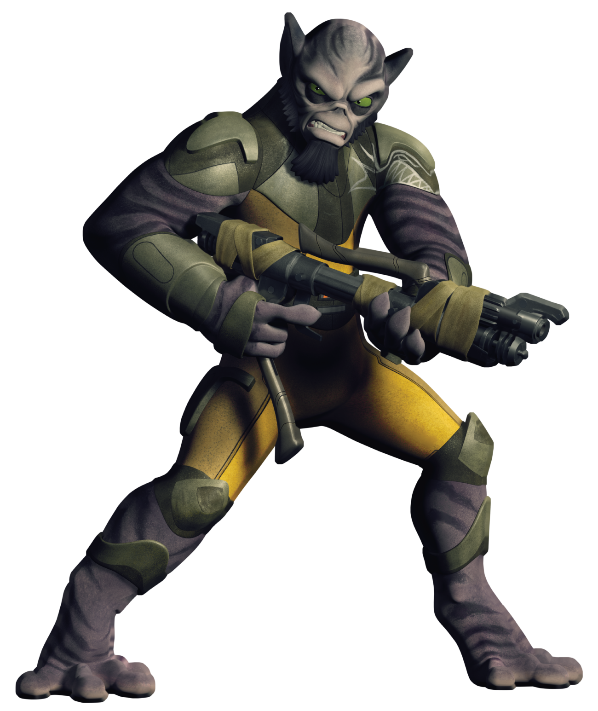

Lasat
lasat
Special Abilities: Lasats begin the game with one rank in either Brawl or Knowledge (Lore). They still may not train either skill above rank 2 during character creation.
Prehensile Feet: Lasats can move along a vertical surface as if the surface was horizontal.
The Lasat are a species native to the planet Lasan, although their species actually originates from the Wild Space planet of Lira San. Lasats are physically notable for their impressive height, strength, and agility, with their muscular digitigrade legs enabling them to run faster, jump higher and farther, and move more quietly than humans. Their large finger pads and prehensile toes assist them in climbing. In addition, their large eyes and ears afford them superior sight and hearing over humans.
Early in its reign the Empire devastated Lasan, destroying the High Honor Guard, the royal family, and killing nearly all members of the species. Following this, Lasat culture fell into decline, with few remaining who could properly speak their native tongue. Because of their scarcity and similarities in their size and strength, the ignorant sometimes mistook Lasats for Wookiees. While some Lasats felt indebted to the Wookiees for them helping fight the Empire during the fall, they despised such comparisons as they felt that it didn't do their own species justice.
The Lasan Honor Guard is an ancient order protecting the royal family. Rich in tradition, it is intertwined with the fortunes of the royal family and Lasan, and it embodies strict codes of honor and etiquette. Very few of the Honor Guard, notably Rebel Spectre-4 Garazeb “Zeb” Orrelios, survived Lasan’s destruction at the hands of the Empire.
These elite fighters are experts in hand-to-hand combat, as well as ranged and melee weapons. The Honor Guard’s traditional weapon, the bo-rifle, combines all of these elements and more. The large weapon transforms into several different modes and can be collapsed to a length of a little more than a meter for easier carrying. It is most commonly extended in a double-ended electro-staff mode or deployed as a blaster rifle. Much like a sword in other cultures, the bo-rifle is highly symbolic. It is an honor to wield, and Guards are offended when unworthy individuals use the weapon. The bo-rifle even has a little-known ancient configuration used in mystical Lasan Ashla rituals. This sometimes produces incredible results, such making a starship pilot itself through hyperspace. A defeated Guard, though, may give their bo-rifle to an enemy who has bested them.